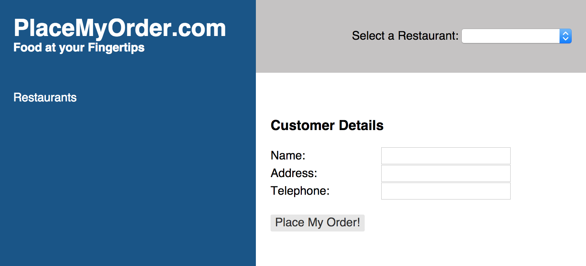

We should know enough at this point to successfully create our Menu component.
Going through the steps will be a good review of what we've covered so far
and help you solidify your understanding of CanJS. We'll also cover some
additional functionality from the objects we already know, such as the findOne
function of can.Model.
In your models folder, open fixtures.js and add the following code to register a
new can.fixture:
We've included a new attribute on the definition of our can.Component, above:
the "events" attribute. The events attribute allows you to define listeners
for events on your can.Component. These events can be DOM events, such as
"click", events in the lifecycle of the can.Component, or properties on the
component's scope. References to the scope from the events attribute are
obtained from the this keyword, as follows: this.scope.
In the code above, we listened for the "inserted" event. This is a
can.Component lifecycle event that fires when the component has been inserted
into the DOM.
Similar to can.Model.findAll, findOne takes a parameters
object as its first argument. Optionally, you can pass in two callback
functions: the first being the success function and the second being the error
function. The success function receives the object returned by the findOne
call as the first parameter in its call signature. The error function
receives the XMLHttpRequest object
as the first parameter in its call signature. If the findOne operation is
successful, the success function will be called. Otherwise, the error function
is called.
In the example above, we create an observable can.Map object. We create an
instance of that object and assign it to the can.Component's scope. Because
the can.Map object is observable, when we later update it's menuData property,
the update is broadcast to the system and the menu can.Component is refreshed
with the menu data returned from the findOne function. There is currently no
implicit function for calling can.Model.findOne. You must use the function
described above.
Let's connect all of this to a view template. Staying in the site_menu folder,
create a template file called site_menu.stache, as follows:
In this Chapter
can.ComponentGet the code for: chapter 6
We should know enough at this point to successfully create our Menu component. Going through the steps will be a good review of what we've covered so far and help you solidify your understanding of CanJS. We'll also cover some additional functionality from the objects we already know, such as the findOne function of can.Model.
In your models folder, open
fixtures.jsand add the following code to register a new can.fixture:Open up
site_modelsand add a new can.Model:In your components folder, create a new folder called
site_menu. In that folder, create a file calledsite_menu.jsand add the following code:We've included a new attribute on the definition of our
can.Component, above: the "events" attribute. The events attribute allows you to define listeners for events on yourcan.Component. These events can be DOM events, such as "click", events in the lifecycle of thecan.Component, or properties on the component's scope. References to the scope from the events attribute are obtained from thethiskeyword, as follows:this.scope.In the code above, we listened for the "inserted" event. This is a
can.Componentlifecycle event that fires when the component has been inserted into the DOM.Similar to
can.Model.findAll,findOnetakes a parameters object as its first argument. Optionally, you can pass in two callback functions: the first being the success function and the second being the error function. The success function receives the object returned by thefindOnecall as the first parameter in its call signature. The error function receives the XMLHttpRequest object as the first parameter in its call signature. If thefindOneoperation is successful, the success function will be called. Otherwise, the error function is called.In the example above, we create an observable
can.Mapobject. We create an instance of that object and assign it to thecan.Component's scope. Because thecan.Mapobject is observable, when we later update it's menuData property, the update is broadcast to the system and the menucan.Componentis refreshed with the menu data returned from the findOne function. There is currently no implicit function for callingcan.Model.findOne. You must use the function described above.Let's connect all of this to a view template. Staying in the
site_menufolder, create a template file calledsite_menu.stache, as follows:Open up
app/base_template.stacheand add the following line to the top of the file:Finally, add the script tag for the SiteMenuComponent to the index.html file:
If you go out to your application, and refresh it, you should see the following:

‹ Sending Data to a Service App State & Basic Routing ›